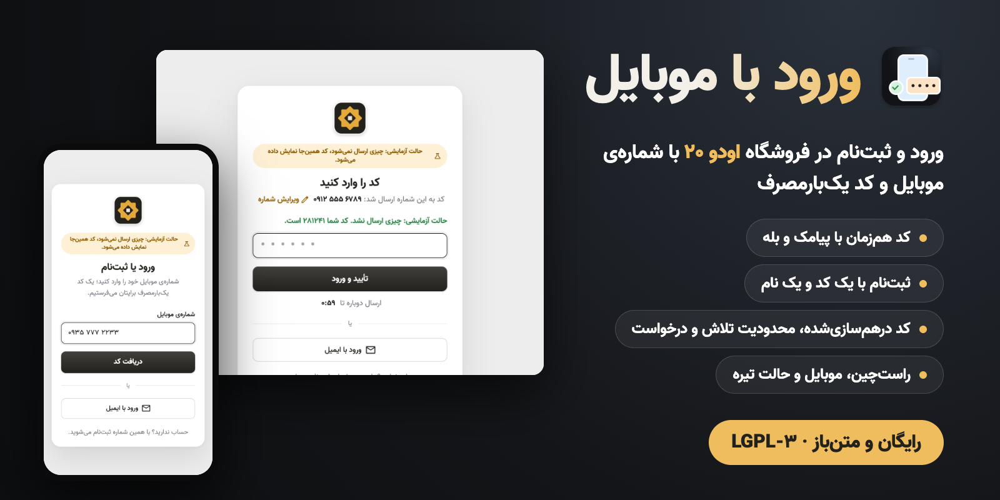
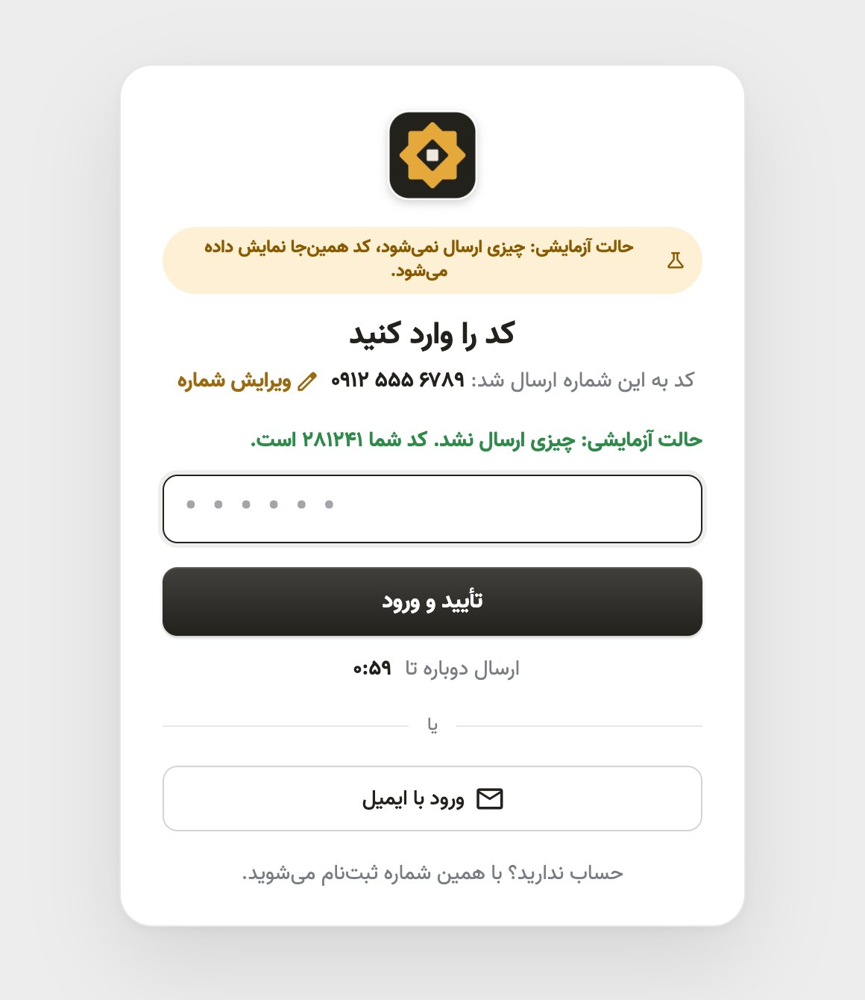
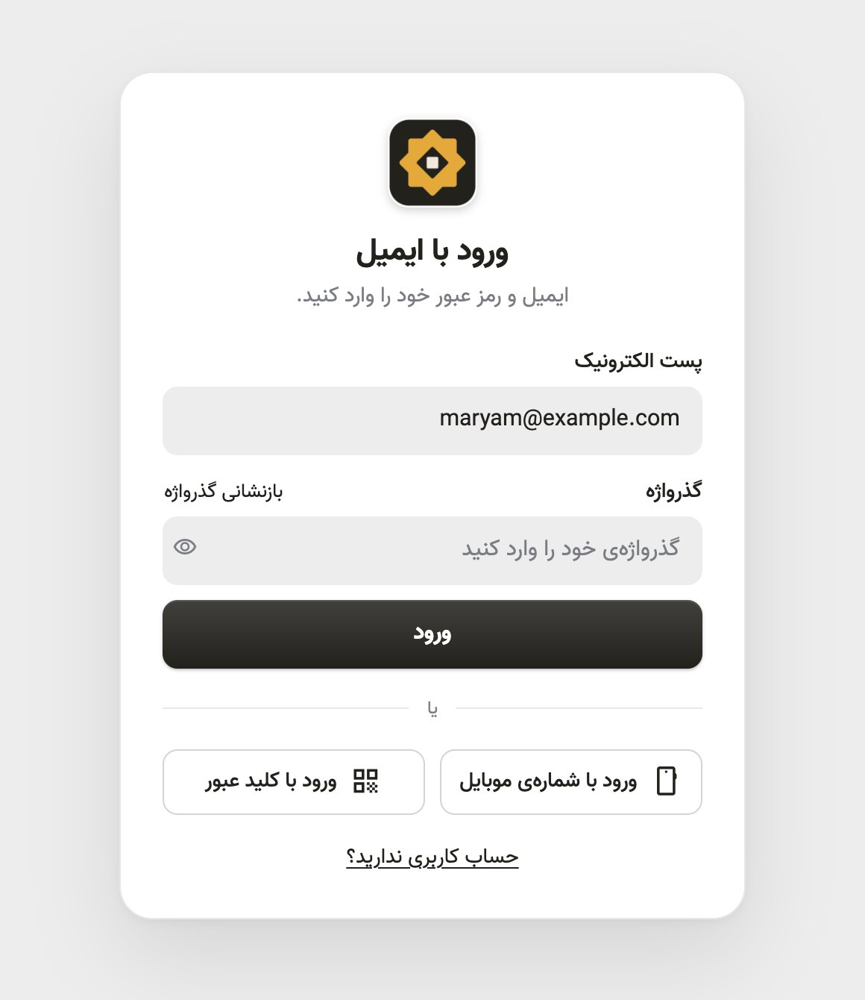
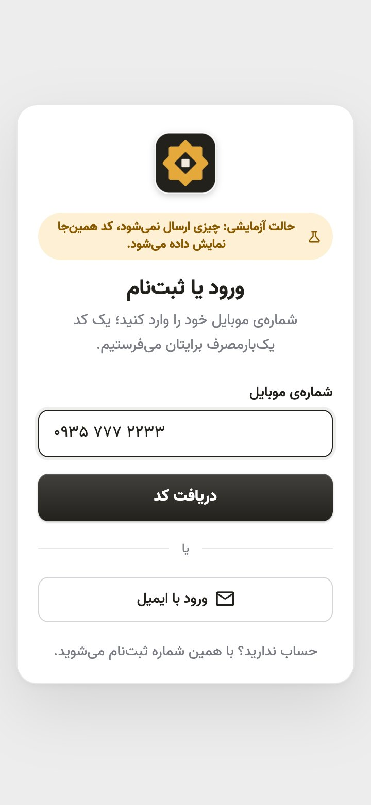
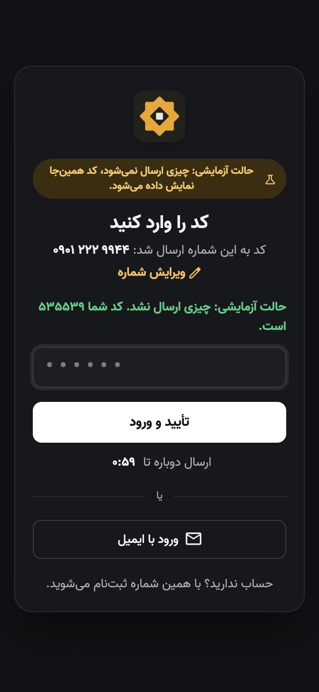
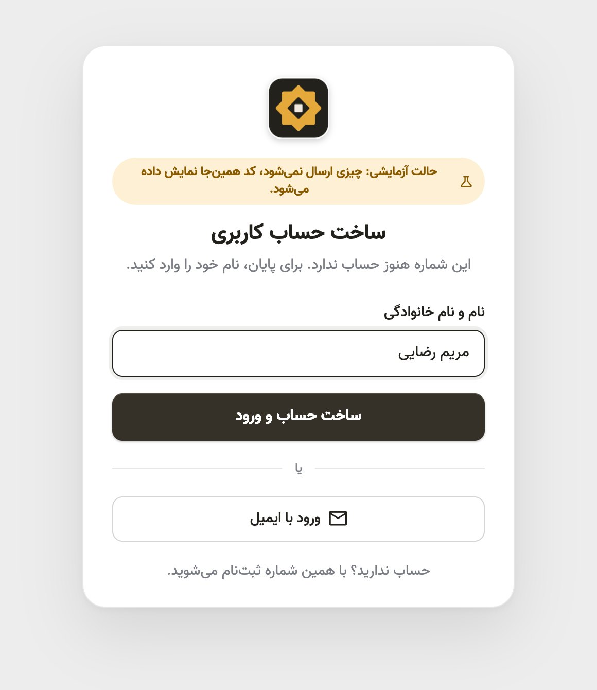
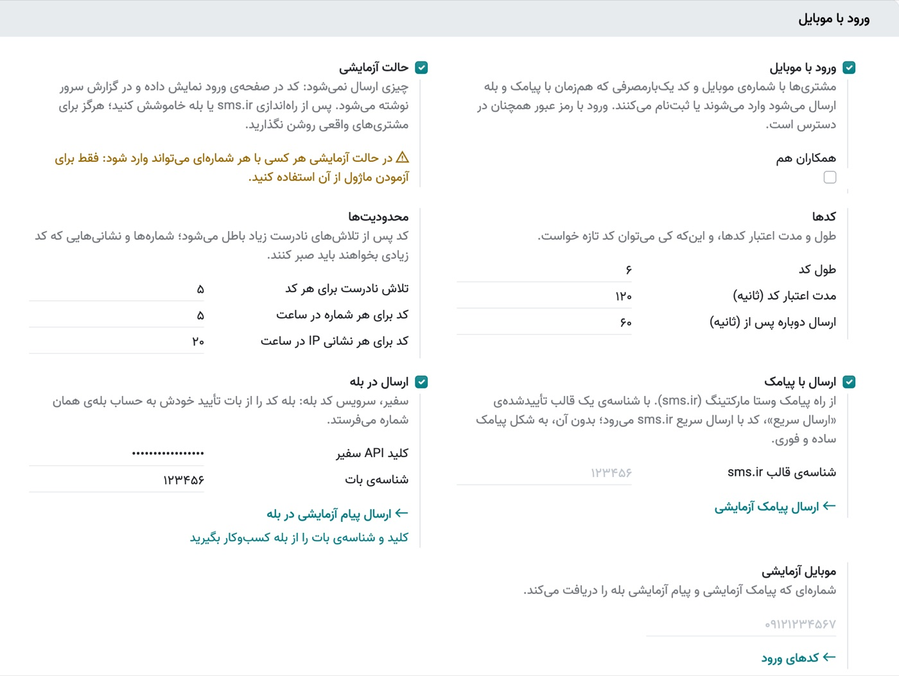

مشتریها با شمارهی موبایل و یک کد یکبارمصرف وارد وبسایت میشوند یا ثبتنام میکنند. کد همزمان با پیامک (از راه وستا مارکتینگ و sms.ir) و در بله (سرویس سفیر) ارسال میشود؛ نشست با ورود خود اودو باز میشود و ورود دومرحلهای همچنان اعمال میشود. رایگان و متنباز.






Customers log in and sign up on the website with their mobile number and a one-time code, sent at the same time by SMS (through Vesta Marketing and sms.ir) and on Bale (Safir). The session is opened by Odoo's own login, so two-factor authentication still applies and the checkout comes back after the login.
Free and open source (LGPL-3), by Vesta AI · vestaai.ir/odoo/modules/vesta-auth-otp